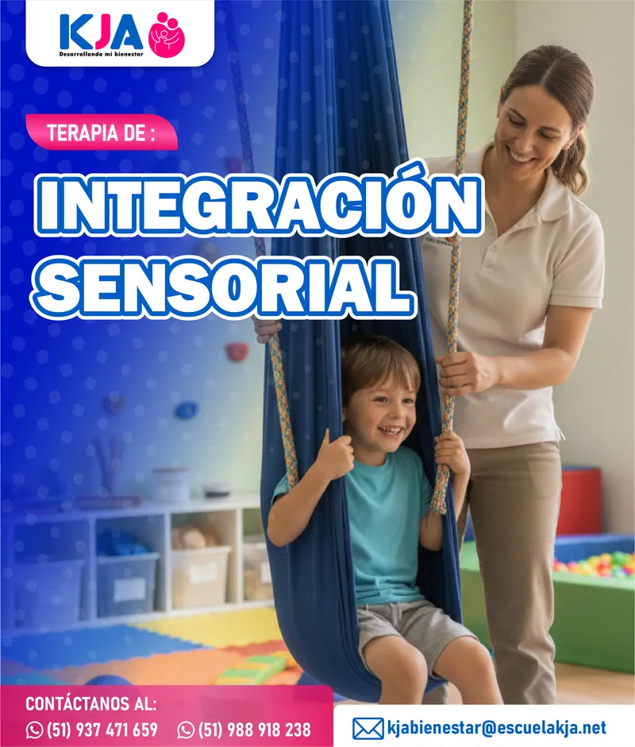
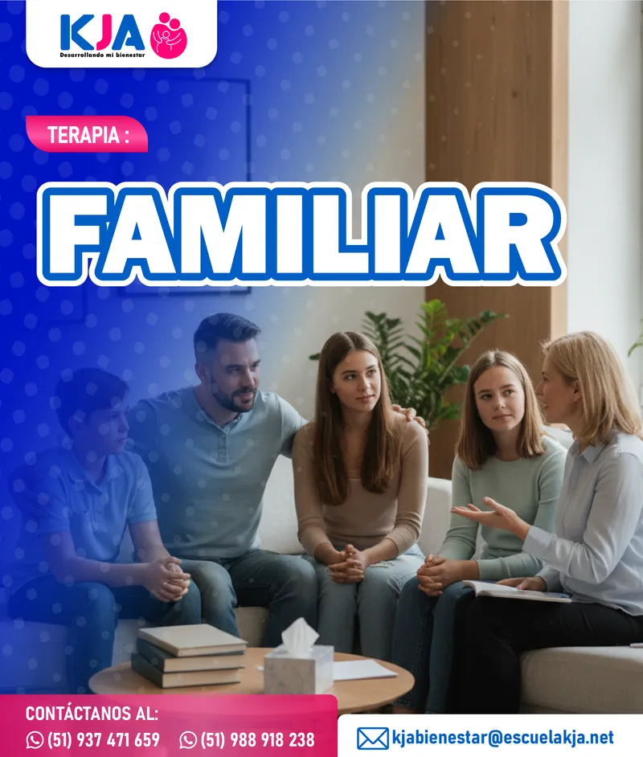

Cargando...
Cargando...
Atención psicológica presencial o virtual para ayudarte a vivir con mayor tranquilidad, equilibrio y bienestar.
Agendar mi consultaEncuentra el acompañamiento profesional que tú o tus seres queridos necesitan.
Evaluación integral del rendimiento académico para identificar dificultades de aprendizaje y definir el mejor plan de apoyo para cada estudiante.
Entendemos el porqué de conductas desafiantes y damos herramientas prácticas para manejarlas con afecto y límites claros en casa y en el entorno escolar.

Procesamos los estímulos sensoriales para mejorar el confort, desarrollo y juego diario. Acompañamos a cada niño con terapias especializadas en su entorno.

Te ayudamos a navegar la tristeza y la apatía. Un espacio de apoyo para entender el origen de tu malestar y darte herramientas para recuperar tu bienestar.

Entendemos el 'porqué' de las pataletas, la desobediencia o la impulsividad, y te damos herramientas prácticas para manejar la conducta en casa.

Te ayudamos a identificar y modificar patrones de pensamiento y comportamiento que te causan malestar, enfocándonos en soluciones prácticas para el presente.

Exploramos cómo tus experiencias pasadas y patrones inconscientes influyen en tus emociones y comportamientos actuales, ayudándote a lograr un mayor autoconocimiento.

Te damos herramientas efectivas para manejar la preocupación, el miedo y los ataques de pánico, ayudándote a reducir los síntomas físicos y recuperar la calma.

Ayudamos a niños con TEA o TDAH a mejorar su concentración y habilidades sociales en un entorno lúdico y adaptado a sus necesidades.

Un espacio seguro para aprender a entender, aceptar y gestionar las emociones (como el enojo, la tristeza o el miedo) de forma saludable.

Evaluación personalizada para identificar dificultades de aprendizaje, conducta o emocionales, y definir el plan de apoyo más adecuado.
Aprende técnicas de atención plena para reducir el estrés, mejorar el bienestar emocional y vivir con mayor consciencia en el presente.
Evaluación psicológica completa para obtener un diagnóstico preciso y diseñar un plan de intervención personalizado a tus necesidades.

Un espacio seguro para que el adolescent pueda expresar su tristeza, desmotivación o vacío emocional, y encontrar juntos herramientas para recuperar el bienestar.

Brindamos herramientas concretas para que el adolescente aprenda a manejar el estrés escolar, el miedo social y la preocupación excesiva.

Acompañamos al adolescente en su búsqueda de identidad, orientación vocacional y manejo de los cambios propios de la etapa.
Fortalecemos la autoconfianza del adolescente, ayudándole a superar la autocrítica, comparaciones negativas y dudas que limitan su desarrollo.
Trabajamos la comunicación, empatía y resolución de conflictos para ayudar al adolescente a establecer relaciones más saludables.

Evaluación integral para identificar los desafíos emocionales, sociales o académicos del adolescente, definiendo el mejor camino a seguir.
Un espacio neutral para reconstruir la comunicación, fortalecer la confianza y encontrar acuerdos que nutran la relación de pareja.
Aprende técnicas de atención plena para reducir el estrés, mejorar el bienestar emocional y vivir con mayor consciencia en el presente.

Aprende a gestionar tus emociones y mejorar tu bienestar. Te acompañamos en el proceso de autodescubrimiento, fortaleciendo tu amor propio y sanación integral.
Evaluación psicológica completa para obtener un diagnóstico preciso y diseñar un plan de intervención personalizado a tus necesidades.

Entendemos lo agotador que puede ser cargar con todo. Aquí encontrarás un espacio para soltar, respirar y construir juntos herramientas que te devuelvan la calma en el día a día.

Un espacio seguro donde trabajamos juntos las preocupaciones que limitan tu día a día — miedos intensos, pensamientos recurrentes o esa sensación de no poder parar. Avanzamos a tu ritmo, con respeto y sin juicios.

Estamos contigo en el proceso de reconocer tu valor. Trabajamos juntos para transformar esa voz interna que te critica en una que te impulse, ayudándote a construir una relación más amable contigo mismo.

A veces la lucha contra lo que sentimos nos agota más que el problema mismo. Aquí aprendemos a soltar esa batalla, enfocarnos en lo que realmente importa y dar pasos concretos hacia la vida que quieres vivir.

¿Sientes que ciertos pensamientos te detienen? Juntos identificamos esas creencias que te generan malestar y las transformamos en perspectivas más realistas, flexibles y saludables para tu bienestar.

Un espacio neutral donde ambos pueden expresarse con libertad. Reconstruimos juntos los puentes de comunicación, fortalecemos la confianza y encontramos acuerdos que nutran la relación.

Un primer paso para entenderte mejor. A través de una evaluación personalizada, identificamos juntos las áreas que necesitan atención y diseñamos el camino terapéutico más adecuado para ti.

Una sesión diagnóstica donde escuchamos a ambos, identificamos los patrones que generan conflicto y trazamos juntos un plan de trabajo para fortalecer la relación desde el respeto mutuo.

Restauramos la comunicación y los vínculos familiares, trabajando juntos para mejorar la convivencia y el bienestar de todo el núcleo familiar.
Orientación psicológica para familias que buscan mejorar su dinámica, prevenir crisis relacionales y fortalecer los lazos afectivos entre sus miembros.
Un espacio neutral para restablecer la comunicación, entender ambas perspectivas y transformar las peleas constantes en acuerdos saludables.

Aprende a expresar tus necesidades de forma clara y a escuchar activamente, rompiendo patrones de discusión y malentendidos.
Un espacio de apoyo para que la familia pueda procesar juntos la pérdida de un ser querido, validando el dolor de cada miembro.
Analizamos a la familia como un 'sistema', entendiendo cómo los roles y patrones de comunicación de cada miembro afectan al grupo.

Adaptamos la TCC a toda la familia, identificando y cambiando patrones de pensamiento y conducta que mantienen los conflictos en casa.
Una sesión conjunta para entender la dinámica familiar, identificar el origen de los conflictos y definir un plan de trabajo que mejore la convivencia.